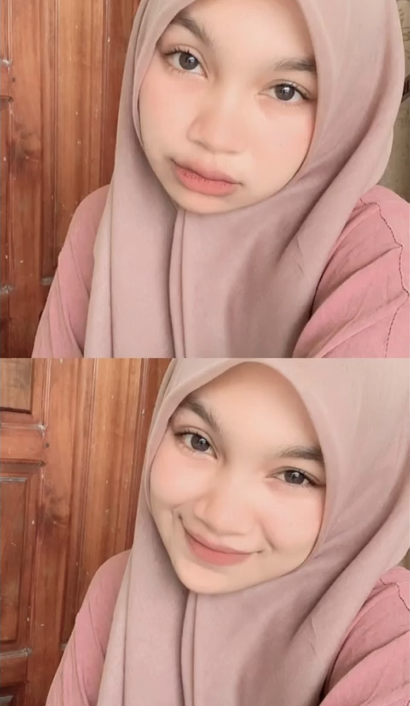
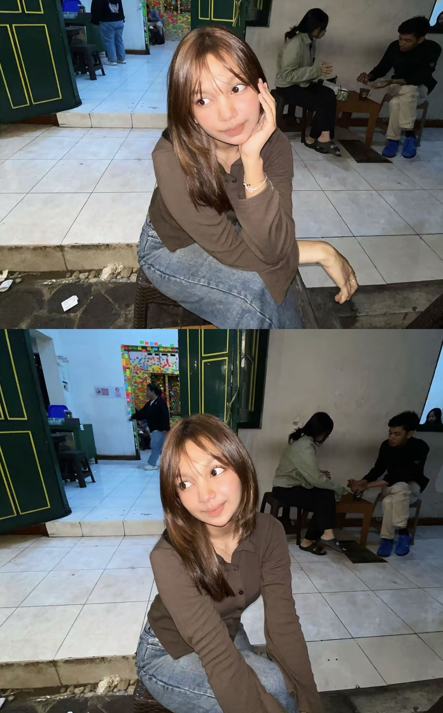
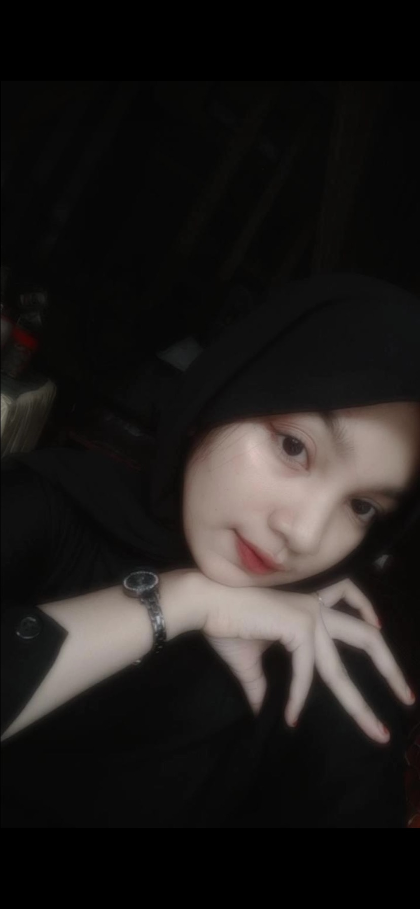

FOR MY FAVORITE PERSON
Untuk Nabila, sahabat terbaik yang selalu ada.
Entah sejak kapan, kehadiranmu menjadi salah satu bagian paling indah dalam hidupku. Awalnya mungkin hanya sebatas cerita, bercanda, dan saling menemani. Tapi semakin banyak waktu yang kita lewati, semakin aku sadar kalau kamu bukan sekadar sahabat biasa.
Terima kasih sudah menjadi tempat untuk bercerita, tertawa, mengeluh, dan menjadi diri sendiri. Ada banyak orang yang datang dan pergi, tapi aku berharap kamu tetap menjadi seseorang yang selalu ada dalam cerita hidupku.
MEMORIES
Potongan cerita kita
Kenangan kecil dari dua sahabat yang selalu punya cerita untuk dikenang.







A NOTE FOR YOU
Kalau suatu hari kita membuka halaman ini lagi...
Mungkin aku tidak selalu pandai mengungkapkan semuanya. Tapi satu hal yang ingin aku simpan di halaman ini: aku sangat bersyukur pernah dipertemukan denganmu.
Semoga sebanyak apa pun waktu berlalu dan sejauh apa pun perjalanan membawa kita, kenangan kita tidak pernah kehilangan tempatnya. Tetaplah menjadi sahabat yang selalu bisa kuajak tertawa, bercerita, dan mengenang banyak hal sederhana.
Untuk sahabatku, orang spesialku, dan salah satu alasan di balik banyak senyumku — Nabila. ♡
— always, your best friend ♡